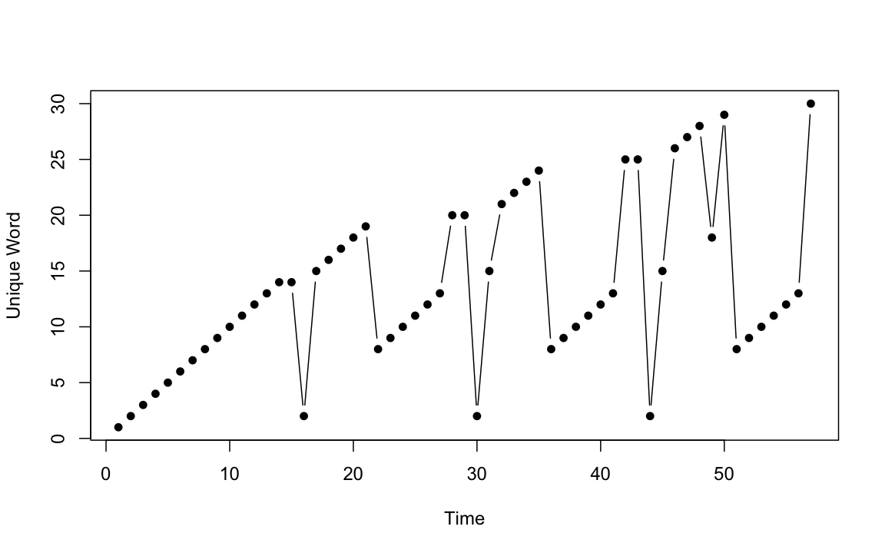
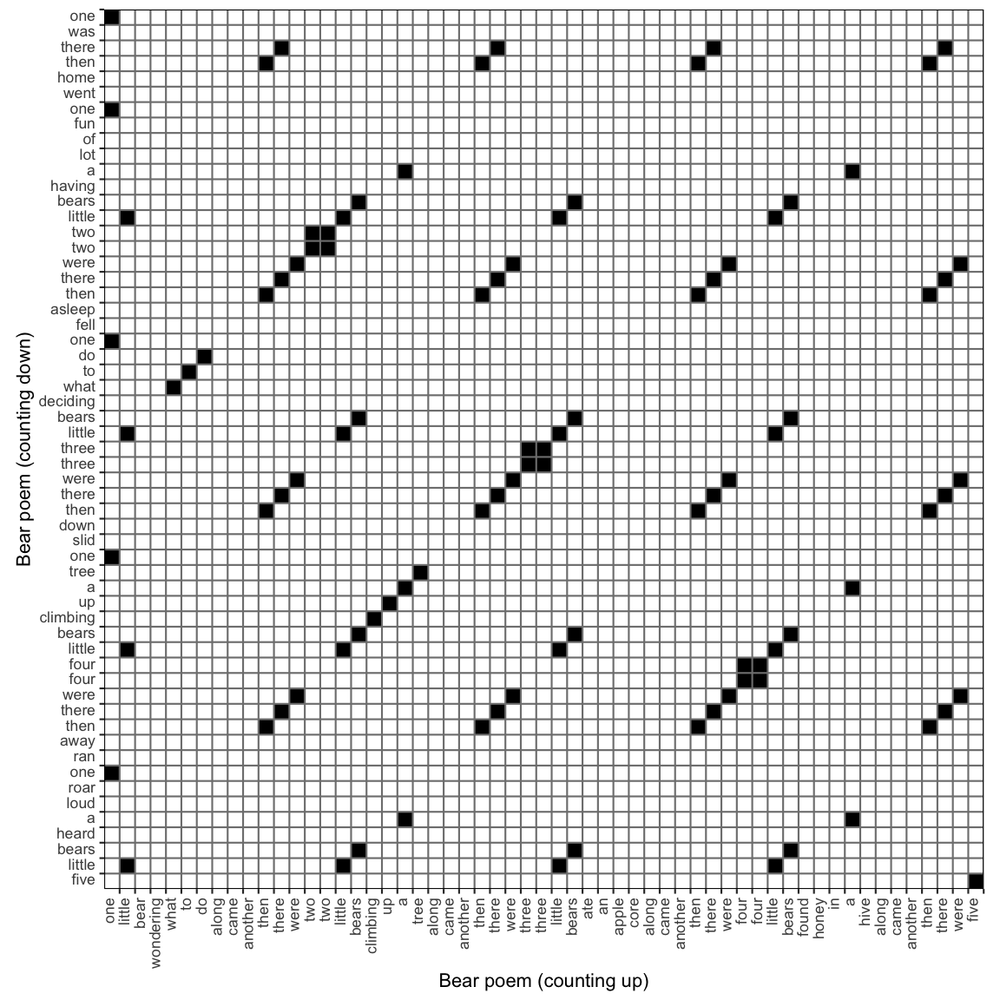

This vignette discusses how to conduct a large variety of recurrence-based time series analyses using R-package casnet. It is not the only R package that can run recurrence analyses, the closest alternative to casnet is probably package crqa. It has a great tutorial paper by (Coco & Dale, 2014)). Several other packages have dedicated functions, e.g. package nonlinearTseries has a function RQA. There are also many options outside of the R framework, see the Recurrence Plot webpage for a comprehensive list of software.
There are 2 main ways to run Recurrence Quantification Analyses in casnet:
- Using functions
rp,rp_measuresandrp_plot - Using function
rp_clwhich will run Norbert Marwan’s commandline Recurrence Plots
The following examples will use the native casnet functions, see the paragraph An R interface to Marwan’s commandline recurrence plots to learn about using rp_cl().
The first part of this vignette will demonstrate the basics of recurrence quantification using unordered categorical data. The second part will discuss RQA for continuous data. This will be a bit more formal with respect to defining the recurrence matrix and how to calculate the various RQA measures.
Unordered Categorical Data
The basic principles behind all varieties of Recurrence Quantification Analysis can be explained by looking at simple examples based on unordered categorical data (nominal time series).
Let’s consider this poem and regard interpret it as a time series (or perhaps better, an event series):
One little bear
Wondering what to do
Along came another
Then there were two!
Two little bears
Climbing up a tree
Along came another
Then there were three!
Three little bears
Ate an apple core
Along came another
Then there were four!
Four little bears
Found honey in a hive
Along came another
Then there were five!We can assign a number to each unique word in the poem. The absolute value of the numbers in the series have no meaning, but what we can say is that whenever a number is repeated, this means a word was repeated. If a specific sequence of numbers is repeated, a larger pattern of words was repeated.
To change the poem into a time series we can use the function casnet::as.numeric_discrete() on a vector that contains the individual words, in lower case, without any punctuation symbols. It returns a named numeric vector, the names will be the words of the poem.
library(casnet)
bear1 <- c("one little bear wondering what to do along came another then there were two two little bears climbing up a tree along came another then there were three three little bears ate an apple core along came another then there were four four little bears found honey in a hive along came another then there were five")
bear_up <- as.numeric_discrete(unlist(strsplit(bear1," ")))
plot(bear_up, type = "b", xlab = "Time", ylab = "Unique Word", pch = 16)
Several things can be inferred from the plot of the time series :
- At
Time = 15the same word is repeated (horizontal line). This is actually due to the omission of the punctuation symbols, it is the repetition of the word"two"which was at the end of one sentence and at the beginning of the next sentence.
- At
Time = 16for the first time a non-identical unique word is repeated ("little").
- At several points there are larger patterns that are repeated (
"along came another then there were").
- The last word of the poem is in fact a unique word (
"five")
How can we quantify these features of the poem? How can we quantify these dynamic patterns?
Categorical Auto-RQA
The answer is to create a recurrence matrix, or, a recurrence plot. We simply put the time series on both the rows and columns of a matrix and put a black dot (or a 1) in every cell in which the same value occurs, that is, we evaluate every possible combination of time points and note whenever we encounter a value that is recurring.
You can create a recurrence matrix in casnet using the function rp(). Function rp() returns a sparse matrix created with package Matrix which has a lot of attributes attached, including the time series it is based on.
RP <- rp(y1 = bear_up, emLag = 1, emDim = 1, emRad = 0)This is called Auto-Recurrence Quantification Analysis, because we are evaluating the recurrences across all lags of time within 1 time series.
rp_plot(RP, plotDimensions = TRUE, drawDiagonal = TRUE, drawGrid = TRUE)Recurrence Plot of the Poem.
The auto-recurrence plot is symmetrical around the diagonal. The diagonal represents the exact coincidence of the time series with itself, it is often called the Line of Incidence (LOI) or Line of Synchronization (LOS).
Auto-RQA Measures
The basic measures that are calculated from the auto-recurrence matrix are based on the number of recurring points and whether the points are on a diagonal or vertical (horizontal) line structure. Often, the diagonal is excluded from the calculations, this can be achieved manually by setting the argument theiler = 0 when creating the recurrence matrix using function rp(). Differences in RQA output between different software packages can often be attributed to inclusion or exclusion of the main diagonal (see the paragraph on the theiler window)
The points that form line structures represent the repetition of dynamic patterns, in the present example, the repetition of certain patterns of words in the text. In the recurrence plot of the poem, mostly diagonal lines can be seen. Diagonal lines represent the repetition of any type of pattern, like "along came another" and "then there were". Horizontal (or vertical) lines represent the repetition of exactly the same value, in the time series of the poem, there is only repetition of the counting words ("two", "three", “four”). These particular repetitions emerge as blocks on the diagonal.
The most frequently used measures calculated from the plot are (see section ):
- The Recurrence Rate (RR) is simply the amount of recurrent points divided over the number of points that could potentially be recurring, i.e. the size of the matrix. This measure corresponds to the correlation sum.
- Determinism (DET) is the proportion of points that fall on a diagonal line.
- Laminarity (LAM) is the proportion of points that fall on a vertical (V Laminarity) or a horizontal line (H Laminarity), or the total (H+V Laminarity)
Several other measures are often reported based on the line structures in the plot:
-
Mean line is the mean of line lengths. Commonly used symbols are L for diagonal lines and TT (trapping time) non-diagonal lines, in casnet:
- Diagonal: MEAN_dl
- Horizontal: MEAN_hl
- Vertical: MEAN_vl
-
Max. line the maximum of observed line lengths. Commonly used symbols L_max, H_max, V_max, in casnet:
- Diagonal: MAX_dl
- Horizontal: MAX_hl
- Vertical: MAX_vl
-
Entropy of the distribution of the line lengths. This is not the entropy of the time series (e.g. Sample Entropy), but the Shannon entropy of the histogram of the line lengths. Commonly used symbols are H, or ENTR, in casnet:
- Diagonal: ENT_dl
- Horizontal: ENT_hl
- Vertical: ENT_vl
To get the basic measures from the recurrence matrix use function rp_measures()
bear_up_out <- rp_measures(RP, silent = FALSE)>
> ~~~o~~o~~casnet~~o~~o~~~
> Global Measures
> Global Max.points N.points RR Singular Divergence Repetitiveness
> 1 Matrix 3192 98 0.0307 14 0.167 0
>
>
> Line-based Measures
> Lines N.lines N.points Measure Rate Mean Max. ENT ENT_rel CoV
> 1 Diagonal 18 84 DET 0.857 4.67 6 0.637 0.157 0.416
> 2 Vertical 1 0 V LAM 0.000 0.00 0 0.000 0.000 NA
> 3 Horizontal 1 0 H LAM 0.000 0.00 0 0.000 0.000 NA
> 4 V+H Total 2 0 V+H LAM 0.000 0.00 0 0.000 0.000 NaN
>
> ~~~o~~o~~casnet~~o~~o~~~The function returns a data frame with all the measures, but can also print a nice summary table. The table is stored in the attribute measureTable of the data frame.
The table output is grouped into Global Measures and Line-based Measures, some properties of the matrix and line distributions are also provided. There are 98 recurring points in the matrix (excluding the diagonal). Divide this on the size of the matrix (excluding the diagonal) 57 * 56 = 3192, gives a recurrence rate of 3.07%. The Singular Points measure indicates there are 14 recurrent points that are not on any line. A measure that is reported in the data frame, but not in the table is the Singularity Rate, which is calculated as the number of singular points on the total number of recurrent points, in the present case 14.3% of recurring points are not part of any larger pattern.
The global measure Divergence is calculated as the multiplicative inverse of the maximum diagonal line length (1/6 = 0.17), which is thought to be an estimate of the (trend of the) positive maximal Lyapunov Exponent. This exponent represents the rate of separation between two trajectories in the phase space of a dynamical system with almost identical initial conditions. How fast such trajectories will diverge is an indication of a system’s sensitivity to initial conditions. The largest recurring dynamic pattern represents the maximal stability of the deterministic structure of the system and due to the definition of Divergence in RQA, the maximum diagonal line line length could be considered an estimate of the Lyapunov time. However, the relation between Lyapunov exponents and RQA measures is quite complicated and should be interpreted with care. Of course, in the context of a poem about bears, this measure may be difficult to interpret.
The global measure Repetitiveness is calculated as (N points on horizontal lines + N points on vertical lines) / N points on diagonal lines. This is the proportion of recurrent points that form line structures that are repetitions of the same value.
There are 18 diagonal lines, made up of a total of 84 recurrent points. The output shows the mean and max line lengths, the entropy of the distribution of line lengths, the relative entropy (standardised on the time series length) and the coefficient of variation of the line lengths. The Laminarity is split between Horizontal and Vertical lines, but also the ‘global’ Laminarity, based on both Horizontal and Vertical lines is reported.
The theiler window
As discussed above, there are no horizontal or vertical lines in the Recurrence Plot of this poem because, by default, the diagonal is removed from the calculations in Auto-RQA. If we include the diagonal there should be horizontal and vertical lines of length 2, representing the repetition of the counting words. This can be achieved by setting the argument theiler = 0.
RP2 <- rp(y1 = bear_up, emLag = 1, emDim = 1, emRad = 0, theiler = 0)
bear_up_out2 <- rp_measures(RP2, silent = FALSE)>
> ~~~o~~o~~casnet~~o~~o~~~
> Global Measures
> Global Max.points N.points RR Singular Divergence Repetitiveness
> 1 Matrix 3249 155 0.0477 14 0.0175 0.17
>
>
> Line-based Measures
> Lines N.lines N.points Measure Rate Mean Max. ENT ENT_rel CoV
> 1 Diagonal 19 141 DET 0.9097 7.42 57 0.809 0.2 1.64
> 2 Vertical 6 12 V LAM 0.0774 2.00 2 0.000 0.0 0.00
> 3 Horizontal 6 12 H LAM 0.0774 2.00 2 0.000 0.0 0.00
> 4 V+H Total 12 24 V+H LAM 0.0774 2.00 2 0.000 0.0 0.00
>
> ~~~o~~o~~casnet~~o~~o~~~There are now 6 vertical and horizontal lines of length 2, they make up the ‘cubes’ visible on the main diagonal. Obviously, including the diagonal in the calculations will change the values of measures. In addition to measures based on Horizontal and Vertical line structures, the size of the RP will now be 57 * 57 = 3249 instead of 57 * 56 = 3192. The number of recurrent points also changes (by 57), which affects the recurrence rate: 4.77%. It is therefore important to always report whether or not the diagonal is included in calculations of Auto-RQA measures.
The theiler argument represents the number (or range) of diagonals that will be removed, or rather, ‘cleared’ before recurrence measures are calculated. This can be thought of as a kind of filter for signals of which it is know they are autocorrelated on relatively short time scales. The idea is that these autocorrelations (which will pop up as recurrent points around the main diagonal) are less interesting to consider than long-range dependencies.
Important: In casnet the value passed to the theiler window argument will affect all measures, whereas in other RQA software, you can notice that only the global measures and those based on diagonal lines are affected. That is, in the example above, with theiler = 1, other RQA software will report the same values for Horizontal and Vertical measures as casnet does with theiler = 0. In our opinion it is more consistent to consider line structures of length 2, of which one point lies on the main diagonal, as a single recurrence, because in Auto-RQA:
- The main diagonal is simply the Line of Incidence, the
lag-0auto-correlation, which is always1.
- If a value observed at time
tis repeated at timet+1, this is a single repetition of the value, the lag-0 autocorrelation should not be included. - If a value observed at time
tis repeated at timet+1and att+2there are 2 recurrences of the value observed attand this should be considered a line of length2.
In Cross-RQA, 2 different time series are evaluated. The lag-0 auto-correlation is not represented, but rather, the lag-0 cross-correlation. This does have a meaningful interpretation, because it represents the recurrence of values in 2 different time series at exactly the same time, which is why it is called the Line of Synchronisation. Therefore, in Cross-RQA the main diagonal should in most cases not be excluded and theiler = 0 should be used. If theiler = NA, the function will decide the best setting based on the symmetry of recurrence matrix, if it is symmetrical,the context is Auto-RQA and the diagonal will be excluded (theiler = 1). If it is not symmetrical the context is Cross-RQA and the main diagonal will be included (theiler = 0).
Categorical Cross-RQA
It is possible to evaluate the recurrences between 2 different time series, in which case the analysis is called Cross-Recurrence Analysis. The analysis is used to examine synchronisation and coupling dynamics, but the principle of quantification is exactly the same as for Auto-RQA, for all lags of time, count whether a value is recurring.
Consider another poem about bears, this time, we count down:
Five little bears
Heard a loud roar
One ran away
Then there were four!
Four little bears
Climbing up a tree
One slid down
Then there were three!
Three little bears
Deciding what to do
One fell asleep
Then there were two!
Two little bears
Having lots of fun
One went home
Then there was one!Let’s examine whether these two poems share similar patterns. The poems are of equal length (57 words), but because they contain different words, the values assigned to the unique words must index the unique words from both poems. This can again be done using the casnet function as.numeric_discrete(). Setting sortUnique = TRUE, will first sort the words (alphabetically) before they are assigned a number.
bear2 <- c("five little bears heard a loud roar one ran away then there were four four little bears climbing up a tree one slid down then there were three three little bears deciding what to do one fell asleep then there were two two little bears having a lot of fun one went home then there was one")
bear_updown <- as.numeric_discrete(c(unlist(strsplit(bear1," ")),unlist(strsplit(bear2," "))), sortUnique = TRUE)
bear_up <- bear_updown[1:length(bear_up)]
bear_down <- bear_updown[(length(bear_up)+1):length(bear_updown)]
plot(bear_up, type = "b", xlab = "Time", ylab = "Unique Word", pch = 16)
lines(bear_down, type = "b", col = "red", lty=2, pch = 16)Nominal Time Series.
The plot of the two series reveals that at some moments the same words occur at exactly the same time, because the lines overlap. What is less clear to see is whether there are patterns that are repeated with some delay.

This is a Cross Recurrence Plot, it is no longer symmetrical around the main diagonal, which is now called the Line of Synchronisation (LOS). To get the Cross Recurrence Matrix, simply add the second time series as argument y2 to function rp(). The function rp_plot() will use the attributes attached to the Matrix object generated by rp() to determine the context of the analysis (Auto or Cross).
CRP <- rp(y1 = bear_up, y2 = bear_down, emLag = 1, emDim = 1, emRad = 0)
rp_plot(CRP, plotDimensions = TRUE, drawDiagonal = TRUE, drawGrid = TRUE)
This now is a Cross-Recurrence Quantification Analysis, because we are evaluating recurrences across all lags of time between 2 time series. The interpretation of a recurring point and the line structures are now in terms synchronisation or coupling strength: A value or larger pattern observed in one time series may be observed to recur in the other time series. These recurrences can even be used to infer a direction of the coupling in terms of specific patterns of ‘leading’ or ‘following’ the interaction (see the section on Diagonal Recurrence Profiles).
The main output of the rp_measures() function is very similar to that of Auto-RQA.
bear_updown_out <- rp_measures(CRP, silent = FALSE)>
> ~~~o~~o~~casnet~~o~~o~~~
> Global Measures
> Global Max.points N.points RR Singular Divergence Repetitiveness
> 1 Matrix 3249 102 0.0314 21 0.143 0.296
>
>
> Line-based Measures
> Lines N.lines N.points Measure Rate Mean Max. ENT ENT_rel CoV
> 1 Diagonal 26 81 DET 0.794 3.12 7 1.1 0.272 0.532
> 2 Vertical 6 12 V LAM 0.118 2.00 2 0.0 0.000 0.000
> 3 Horizontal 6 12 H LAM 0.118 2.00 2 0.0 0.000 0.000
> 4 V+H Total 12 24 V+H LAM 0.118 2.00 2 0.0 0.000 0.000
>
> ~~~o~~o~~casnet~~o~~o~~~The output is again grouped into Global Measures and Line-based Measures. There are 102 recurring points in the matrix, now the main diagonal has to be included, points that fall on the main diagonal If we divide this on the size of the matrix (57 * 57 = 3192), we get a recurrence rate of 3.14%. There are 21 recurrent points that are not on any line.
Anisotropic and asymmetric categorical RQA measures
To see the asymmetry (or anisotropy) in the plot, look at the first few columns and the last few rows of the matrix. There is also a lot of symmetry in the plot. If these were data from 2 systems interacting, one could say their dynamics are probably coupled. In the present case the similarity occurs because the basic structure of the 2 poems is the same.
There are two sets of measures that quantify the asymmetry in the CRP:
Anisotropy ratio based on Horizontal and Vertical line measures (Cox, Steen, Guevara, Jonge-Hoekstra, & Dijk, 2016): The ratios are calculated as
(horizontal - vertical) / (horizontal + vertical), for example the anisotropic Laminarity ratio is:(H LAM - V LAM) / (H LAM + V LAM). A value of0means no anisotropy, negative ratios indicate the measures based on vertical lines had higher values, positive ratios indicate the measures based on horizontal lines had higher values. To get these measures incasnet::rp_measures(), set the argumentanisotropyHV = TRUE.Asymmetry ratio based on Upper and Lower triangles: The ratios are calculated as
(upper - lower) / (upper + lower), for example the asymmetric Determinism ratio is:(DET upper triangle) - (DET lower triangle) / (DET upper triangle) + (DET lower triangle). A value of0means no asymmetry, negative ratios indicate the measures based on the lower triangle had the higher values, positive ratios indicate measures based on the upper triangle had higher values. To get these measures incasnet::rp_measures()set the argumentasymmetryUL = TRUE.
bear_updown_out <- rp_measures(CRP, anisotropyHV = TRUE, silent = FALSE)>
> ~~~o~~o~~casnet~~o~~o~~~
> Global Measures
> Global Max.points N.points RR Singular Divergence Repetitiveness
> 1 Matrix 3249 102 0.0314 21 0.143 0.296
>
>
> Line-based Measures
> Lines N.lines N.points Measure Rate Mean Max. ENT ENT_rel CoV
> 1 Diagonal 26 81 DET 0.794 3.12 7 1.1 0.272 0.532
> 2 Vertical 6 12 V LAM 0.118 2.00 2 0.0 0.000 0.000
> 3 Horizontal 6 12 H LAM 0.118 2.00 2 0.0 0.000 0.000
> 4 V+H Total 12 24 V+H LAM 0.118 2.00 2 0.0 0.000 0.000
>
>
> Horizontal/Vertical line anisotropy
>
> Ratio N.lines N.points Measure Rate Mean Max ENT
> 1 H/V line measures 0 1 LAM 0 0 0 NaN
>
> ~~~o~~o~~casnet~~o~~o~~~The anisotropic ratios show there are an equal amount of horizontal and vertical lines in the plot, so the Laminarity Rate, Mean, Max and Entropy are also equal and the ratios are all 0. In the current context, the equal number of horizontal and vertical lines can be understood from the structure of the 2 poems, they both contain the repetition of the same counting words, for example: then there were three three little bears.
It is not the case that the two poems are each others mirror opposites, so some asymmetry should be expected, it’s apparently not present in the ratio between horizontal and vertical lines. In the present case we know the upper triangle represents recurrent points (repeated words) that occur at an earlier moment in “time” (position in the poem) in the counting up version which is on on the x-axis. The recurrent points in the lower triangle represent repeated words that occurred at an earlier position in the counting down version of the poem on the y-axis. In a synchronisation study one could use the ratios of RQA measures from the upper and lower triangle to indicate a coupling direction.
bear_updown_out <- rp_measures(CRP, asymmetryUL = TRUE, silent = FALSE)>
> ~~~o~~o~~casnet~~o~~o~~~
> Global Measures
> Global Max.points N.points RR Singular Divergence Repetitiveness
> 1 Matrix 3249 102 0.0314 21 0.143 0.296
>
>
> Line-based Measures
> Lines N.lines N.points Measure Rate Mean Max. ENT ENT_rel CoV
> 1 Diagonal 26 81 DET 0.794 3.12 7 1.1 0.272 0.532
> 2 Vertical 6 12 V LAM 0.118 2.00 2 0.0 0.000 0.000
> 3 Horizontal 6 12 H LAM 0.118 2.00 2 0.0 0.000 0.000
> 4 V+H Total 12 24 V+H LAM 0.118 2.00 2 0.0 0.000 0.000
>
>
> Upper/Lower triangle asymmetry
>
> Global Measures
> Global.Ratio N.points RR Singular Divergence Repetetiveness
> 1 U/L of points -0.0159 -0.0159 0.182 0 0.0577
>
>
> Line-based Measures
> Line.ratio N.lines N.points Measure Rate Mean Max ENT
> 1 D lines -0.0577 0.891 DET -0.0577 0.00483 0 0.00944
> 2 V lines 0.0000 1.000 V LAM 0.0000 0.00000 0 NaN
> 3 H lines 0.0000 1.000 H LAM 0.0000 0.00000 0 NaN
>
> ~~~o~~o~~casnet~~o~~o~~~The asymmetry ratios based on the upper and lower triangle indeed indicate asymmetry of the Global Measures and Diagonal line-based measures. There are more recurrent points in the lower triangle (64) than in the upper triangle (62). There are more singular points the upper triangle and determinism is higher in the lower triangle.
Diagonal (Cross) Recurrence Profiles
The diagonal recurrence profile (DRP) or more appropriate, the diagonal cross-recurrence profile (DCRP), is a representation of the distribution of recurrent points in a band around the line of synchronisation The figure below is from (Wallot & Leonardi, 2018)), it shows how the profile is calculated, the recurrence rate for each of the diagonals in the window is calculated.
![The Diagonal Recurrence Profile. [Fig. 8 from Wallot & Leonardi(2018)]](https://www.frontiersin.org/files/Articles/365352/fpsyg-09-02232-HTML/image_m/fpsyg-09-02232-g008.jpg)
The Diagonal Recurrence Profile. [Fig. 8 from Wallot & Leonardi(2018)]
The profile can be used to determine whether one time series is “leading”, or “following” the other series. A more general term would be coupling direction. In the current example, there are no real coupling dynamics between the poems, but there is a shared structure between them.
rp_diagProfile(CRP, diagWin = 32, doShuffle = TRUE, Nshuffle = 19, y1 = bear_up, y2 = bear_down, xname = "counting up", yname = "counting down")> Calculating diagonal recurrence profiles...
>
> Profile 1
> Profile 2
> Profile 3
> Profile 4
> Profile 5
> Profile 6
> Profile 7
> Profile 8
> Profile 9
> Profile 10
> Profile 11
> Profile 12
> Profile 13
> Profile 14
> Profile 15
> Profile 16
> Profile 17
> Profile 18
> Profile 19
> Profile 20
Diagonal Recurrence Profile produced by function rp_diagProfile()
#cat("{#fig:drp}")The profile shows there are peaks in recurrent points at the LOS as well as at particular intervals. To be a bit more certain these peaks are real and were not just incidental observations that occurred by chance, one can perform a simple surrogate analysis: One of the time series is randomised, that is, the order in which values appear in the series is shuffled. The CRQA analysis is repeated a number of times and the average of the diagonal recurrence profiles can be used to determine whether a peak is indeed larger than what may be expected based on chance. A one-sided test can be constructed by considering the rank-order of the observed values relative to the shuffled series. If the observed value is the highest among the distribution of 20 values the p-value is 1/20 = .05. A two sided test would require 39 surrogates, a rank 1 or 40 would yield 2/40 = .05.
Chromatic RQA measures
It is often the case that nominal time series data will consist of just a few categories, for example, the series might represent different behavioural categories coded from video recordings. When the data are transformed into a recurrence matrix all category information is lost, as we are only evaluating whether something recurred or not (not what is recurring).
There maybe situations in which it is interesting to calculate RQA measures for each individual category. This can be done using so-called Chromatic RQA (cf. Cox et al., 2016; De Jonge-Hoekstra, Van Der Steen, & Cox, 2020), which has been implemented in casnet through the argument chromatic in the function rp().
Below is a simple example of two nominal time series with 3 categories. These data could represent an interpretation of the behaviour of two children interacting with one one another during play. The time series data can be numeric or a character string describing each category which will be assigned a unique number. Note that the recurrence matrix now retains the category numbers, it is no longer a binary matrix.
y1 <- c("positive", "neutral", "neutral", "hostile", "hostile", NA, "hostile", "neutral", "positive", "positive", "positive", "positive", "neutral")
y2 <- c("neutral", "hostile", "neutral", "hostile", "hostile", "positive", "neutral", "neutral", "positive", "positive", "positive", "neutral", "neutral")
RP_chr <- rp(y1 = y1, y2 = y2, chromatic = TRUE)
# Chromatic Recurrence Matrix retains the label information
RP_chr> 13 x 13 sparse Matrix of class "dgCMatrix"
>
> [1,] . . . . . 3 . . 3 3 3 . .
> [2,] 2 . 2 . . . 2 2 . . . 2 2
> [3,] 2 . 2 . . . 2 2 . . . 2 2
> [4,] . 1 . 1 1 . . . . . . . .
> [5,] . 1 . 1 1 . . . . . . . .
> [6,] . . . . . . . . . . . . .
> [7,] . 1 . 1 1 . . . . . . . .
> [8,] 2 . 2 . . . 2 2 . . . 2 2
> [9,] . . . . . 3 . . 3 3 3 . .
> [10,] . . . . . 3 . . 3 3 3 . .
> [11,] . . . . . 3 . . 3 3 3 . .
> [12,] . . . . . 3 . . 3 3 3 . .
> [13,] 2 . 2 . . . 2 2 . . . 2 2When the matrix is plotted using rp_plot() the categories will have different colours in the plot and a legend will be added with the category names.
rp_plot(RP_chr, plotDimensions = TRUE, drawGrid = TRUE)Chromatic Recurrence Plot
The output of rp_measures()) now provides measures for each category label separately.
rp_measures(RP_chr, anisotropyHV = TRUE, asymmetryUL = TRUE, silent = FALSE)>
> ~~~o~~o~~casnet~~o~~o~~~
> Chromatic RQA with categories: hostile, neutral, positive
> Global Measures
> Global Max.points N.points RR Singular Divergence Repetitiveness
> hostile Matrix 169 9 0.0533 7 0.500 6.0
> neutral Matrix 169 24 0.1420 20 0.500 7.0
> positive Matrix 169 20 0.1183 10 0.333 3.1
>
>
> Line-based Measures
> Lines N.lines N.points Measure Rate Mean Max. ENT ENT_rel
> 1 hostile Diagonal 1 2 DET 0.222 2.00 2 0.000 0.000
> 2 neutral Diagonal 2 4 DET 0.167 2.00 2 0.000 0.000
> 3 positive Diagonal 4 10 DET 0.500 2.50 3 0.693 0.270
> 4 hostile Vertical 3 6 V LAM 0.667 2.00 2 0.000 0.000
> 5 neutral Vertical 6 12 V LAM 0.500 2.00 2 0.000 0.000
> 6 positive Vertical 4 16 V LAM 0.800 4.00 4 0.000 0.000
> 7 hostile Horizontal 3 6 H LAM 0.667 2.00 2 0.000 0.000
> 8 neutral Horizontal 8 16 H LAM 0.667 2.00 2 0.000 0.000
> 9 positive Horizontal 5 15 H LAM 0.750 4.00 3 0.000 0.000
> 10 hostile V+H Total 6 12 V+H LAM 0.667 2.00 2 0.000 0.000
> 11 neutral V+H Total 14 28 V+H LAM 0.583 2.00 2 0.000 0.000
> 12 positive V+H Total 9 31 V+H LAM 0.775 3.44 4 0.687 0.268
> CoV
> 1 hostile NA
> 2 neutral 0.000
> 3 positive 0.231
> 4 hostile 0.000
> 5 neutral 0.000
> 6 positive 0.000
> 7 hostile 0.000
> 8 neutral 0.000
> 9 positive 0.000
> 10 hostile 0.000
> 11 neutral 0.000
> 12 positive 0.153
>
>
> Horizontal/Vertical line anisotropy
>
> Ratio N.lines N.points Measure Rate Mean Max ENT
> hostile H/V line measures 0.0000 1.000 LAM 0.0000 0.000 0.000 NaN
> neutral H/V line measures 0.1429 1.333 LAM 0.1429 0.000 0.000 NaN
> positive H/V line measures -0.0323 0.938 LAM -0.0323 -0.143 -0.143 NaN
>
>
> Upper/Lower triangle asymmetry
>
> Global Measures
> Global.Ratio N.points RR Singular Divergence Repetetiveness
> hostile U/L of points -0.455 -0.455 -0.714 0 -0.33333
> neutral U/L of points 0.037 0.037 -0.130 NaN NaN
> positive U/L of points -0.130 -0.130 0.000 0 -0.00478
>
>
> Line-based Measures
> Line.ratio N.lines N.points Measure Rate Mean Max ENT
> 1 hostile D lines 0.000 1.000 DET 0.000 0.0000 0.000 NaN
> 2 neutral D lines 1.000 Inf DET 1.000 1.0000 1.000 NaN
> 3 positive D lines -0.231 0.625 DET -0.231 -0.0323 0.000 0.0426
> 4 hostile V lines -0.333 0.500 V LAM -0.333 0.0000 0.000 NaN
> 5 neutral V lines 0.667 5.000 V LAM 0.667 0.0000 0.000 NaN
> 6 positive V lines -0.444 0.385 V LAM -0.444 -0.1304 -0.143 -0.2000
> 7 hostile H lines -0.333 0.500 H LAM -0.333 0.0000 0.000 NaN
> 8 neutral H lines 0.250 1.667 H LAM 0.250 0.0000 0.000 NaN
> 9 positive H lines 0.000 1.000 H LAM 0.000 0.0000 0.000 0.0000
>
> ~~~o~~o~~casnet~~o~~o~~~Continuous Data
Recurrence analyses of continuous data are also based on a recurrence matrix which represents recurring values. In terms of (complex) dynamical systems, recurring values represent states of the system that are re-visited at least once during the time it was observed. There are several different ways to construct a recurrence matrix from one or more time series, in this vignette the recurrence matrix based on phase space reconstruction will be discussed (cf. Marwan, Carmen Romano, Thiel, & Kurths, 2007) as well as the so-called multidimensional recurrence matrix (Wallot, Roepstorff, & Mønster, 2016).
An important concept in recurrence-based time series analyses of continuous data is the Phase (or State) Space and its reconstruction. The state space is spanned by the dimensions of a system and each coordinate in the space represents a potential state of the system (the degrees of freedom available to the system). A sequence of successive states is referred to as a trajectory, or, a path through phase space. If such a trajectory is re-visited by the system, it will be a relatively stable state, or, orbit of the system.
In order to explain the steps involved in reconstructing the phase space from a (multivariate) time series, consider the following system of \(N=4\) coupled competitive Lotka-Volterra equations previously studied by Vano et al. (2006):
\[\begin{equation} \frac{dY_{i}}{dt} = r_iY_i\left(1-\frac{\sum_{j=1}^{N}\alpha_{ij}Y_j}{K_i}\right),\ \ \ i=1,\ldots,N\end{equation}\]
with \(K_i\) the carrying capacity set to a value of \(10\) for all \(Y_i\), and \(r_i\) a vector of growth rates and \(\alpha_{ij}\) a matrix of coupling parameters:
\[\begin{equation} Y_{i}(t=0) = \begin{bmatrix}8\\2\\2\\2\end{bmatrix},\ \ K = \begin{bmatrix}10\\10\\10\\10\end{bmatrix},\ \ r = \begin{bmatrix}1\\0.72\\1.53\\1.27\end{bmatrix},\ \text{and}\ \ \alpha = \begin{bmatrix} 1 &1.09 &1.52 &0\\ 0 &1 &0.44 &1.36\\ 2.33 &0 &1 &0.47\\ 1.21 &0.51 &0.35 &1\end{bmatrix}. (\#eq:lvPars) \end{equation}\]
Time series representing the dimensions of the 4D system.
The parameters in \(r\) and \(\alpha\) are taken from Vano et al. (2006), who describe the dynamics of the resulting attractor as chaotic (bounded, quasi-periodic, sensitive dependence on initial conditions) and found several quantities to display power-law scaling, which is associated with self-organized criticality of multi-stable complex systems (Bak, Tang, & Wiesenfeld, 1987; Vano et al., 2006). Figure @ref(fig:lvSeries) shows \(1,000\) iterations of the system (using the 4th order Runge-Kutta method). At \(t=\) 700 the coupling strengths in \(A\) are gradually increased by 0.01 at each iteration untill \(t=\) 800. This means the dynamics of all dimensions become more strongly coupled. These time series could represent a single participant taking part in a study in which bi-daily ratings on a visual analog scale were collected. The dynamics are characterized by initial transient behaviour which settles into a stable, fixed point state, after the coupling strength is changed, a more complex state emerges as a (quasi-)periodic orbit (a trajectory that revisits the same region of phase space, but is not exactly the same as previous visits).
The 4D state space of the simulated system. The grey squares mark t=700 and t=800 at which the coupling strengths between the 4 dimensions are gradually increased by 0.01 each iteration.
A (multivariate) time series can be interpreted as a finite representation of the trajectory or state-evolution of a stochastic or deterministic dynamic system: \({y_i}_{i=1}^{N}\), with \(y_i = y(t_i)\) (cf. Zou, Donner, Marwan, Donges, & Kurths, 2019). Figure @ref(fig:lvStateSpace) is a 3D representation of the 4D phase space of the system, with the values of dimension \(Y_4\) represented by a colour gradient.
Embedding parameters for attractor reconstruction: The upper panel shows the time-delayed mutual information function with 3 embedding delays, 2 minima and the maximum possible lag for 10 surrogate dimensions given the length of the time series. The bottom panel shows the results of the false nearest neighbor analysis for each of the 3 delays. This plot is the ouput of function est_parameters() from package casnet.
The recurrence matrix \(\mathbf{R}_{i,j}\) is defined as: \[\begin{equation} \mathbf{R}_{i,j}(\varepsilon)=\Theta\left(\varepsilon-\|\vec{y}_i-\vec{y}_j\|\right),\ \ \ i,j = 1,\ldots, N \end{equation}\] where \(\|\ \cdot\ \|\) is a distance norm (e.g. Euclidean, Chebyshev, Manhattan), \(\varepsilon\) is a threshold value which determines at which distance value a state should be considered to recur, and \(\Theta\) is the Heaviside function, which returns \(1\) if a distance value falls below \(\varepsilon\) and \(0\) otherwise. Figure @ref(fig:lvDistOri) displays the unthresholded distance matrix based on the Maximum norm (Chebyshev distance). The distances of each state coordinate (a 4-tuple represented by the values of \(y_i\) at each time point) to every other state coordinate are represented by different a colours. The matrix is symmetric around the diagonal, the line of incidence, which is excluded from calculation of recurrence measures. The colour-bar displays several distance values on the right side, which, should they be chosen as the threshold value \(\varepsilon\), would result in the Recurrence Rate (proportion of recurrent points in \(\mathbf{R}_{i,j}\)) displayed on the left.
Distance matrix of the simulated 4D phase space.
Phase Space Reconstruction
A record of all the dimensions that span the phase space of a system will not be available in most cases, so a reconstruction of the attractor and dynamics in phase space will often be conducted. This a common step in many nonlinear time series analyses and can be achieved using the method of delay-embedding (Kantz & Schreiber, 2004; Takens, 1981). 1 Due to Takens’ theorem (1981) a phase space can be reconstructed that is topologically equivalent to the original space, by creating an \(m\)-dimensional time-delay embedding of a single observed dimension of a system: \(\vec{y}_i = (y_i, y_{i+\tau}, \ldots, y_{i+\left(m-1\right)\tau})\), where \(\tau\) is the embedding delay. The idea is to exploit the interaction-dominant dynamics that govern the behavior of complex systems. Due to the coupled dynamics of the 4 dimensions of the simulated system, there is information about the dynamics of \(Y_2\), \(Y_3\) and \(Y_4\) encoded in the dynamics of \(Y_1\). Therefore, any of the dimensions could be used to reconstruct the dynamics of the original phase space. The exact trajectories through phase space will be different, but the dynamical invariants of the original attractor will be retained by the reconstruction and recurrence analyses can be used to quantify (properties of) dynamical invariants. The attractor reconstruction procedure involves two steps, the first is choosing an embedding delay \(\tau\), the second concerns choosing an appropriate number of surrogate dimensions to embed the time series.
Choosing an embedding lag
The choice for the embedding delay is an optimization step and less crucial than choosing a sufficiently large embedding dimension. Takens’ theorem guarantees topological equivalence if \(m\) is twice as large as the fractal dimension of the support (the nonzero elements) of the invariants generated by the dynamics in the original phase space (Zou et al., 2019). In other words, there should be enough nonzero data to make an embedding with enough surrogate dimensions that fully captures the original dynamics. Embedding a time series in a higher dimension than strictly necessary is unproblematic. Intuitively, \(\tau\) should represent a lag of time at which the information about future states of the system as predicted by its history, are at a minimum, for example, the lag at which the autocorrelation function goes to \(0\). However, because time series representing observables of complex systems more often than not violate the stationarity and homogeneity assumptions, a time-delayed mutual information function is commonly used (cf. Fraser & Swinney, 1986). As can be seen in the top panel of Figure @ref(fig:lvEmbed) the mutual information function of dimension \(Y_1\) has local and global minima that could be used as the embedding delay. A delay of 17.5 was used (the median of the first local minima found for the four series) for all reconstructions. By copying the time series starting at \(\tau\) and treating it as the first point of a surrogate dimension, a state vector is created based on a single observed time series. This process is repeated up to \(m\)-dimensions, by copying the series at \(2\tau, 3\tau,\ldots (m-1)\tau\). The question is, how to decide on the number of embedding dimensions required to represent the dynamics of the original attractor?
False Nearest Neighbor analysis
One way to estimate \(m\) is by False Nearest Neighbor (FNN) analysis (Kennel, Brown, & Abarbanel, 1992), which will consider whether points that are close together in an \(m\)-dimensional reconstructed phase space, will still be close together in an \(m+1\) embedding. If this is not the case, these points were ‘false neighbors’ of the points in \(m\) dimensions. The lower panel of Figure @ref(fig:lvEmbed) shows the results of the FNN analysis for the simulated system. We know the correct number of dimensions should be \(m = 4\) and this is indeed the case for \(Y_1\) and the local minimum. With real-world data, one would look at the dotted line, where the percentage of false neighbors drops below 10%. The value obtained by FNN provides an estimate of the minimum number of coupled ODE’s required to model the dynamics of the original phase space trajectory. Based on \(Y_2\) and \(Y_4\) a similar result is found, but \(Y_3\) is an exception, here FNN indicates a much higher embedding dimension. The reason is the lack of support that is required by Takens’ theorem, as can be seen in Figure @ref(fig:lvSeries), series \(Y3\) contains a lot of zeroes. If this were an observed data set and the aim was to compare analyses based on reconstructions of each of the four series, the largest embedding dimension would be used for all series, for demonstration purposes, we’ll use \(m=4\) for all reconstructions. Note that the lack of support in \(Y_3\) cannot be resolved by simply adding a constant and proceeding with attractor reconstruction. The lack of support is produced by the coupled dynamics, so there are basically two ways in which \(Y_3\) could become a candidate for a successful phase space reconstruction: i) Observe the dynamics for a longer period of time, potentially decreasing the relative frequency of zeros; ii) Change the parameters to change the dynamics of \(Y_3\).
The reconstructed phase space based on variable Y1, Y2, Y3 and Y4 respectively. The black diamond indicates t=0; the grey squares at t=700 and t=800 indicate where the coupling strength is increased; the black circle is at t=949.
The Figure displays reconstructed attractors based on each of the 4 dimensions. The topological equivalence may not be immediately apparent, but considering that for each reconstruction just 1 of the original dimensions was used it is quite remarkable we end up with a trajectory that appears to orbit around a specific region. According to the rules of topology, there exists a continuous deformation for each of these trajectories that will recover the exact same shape as the original attractor. The topological equivalence is visible in the unthresholded distance matrices displayed in Figure @ref(fig:lvDistRec). Here, the transition towards the stable state that persists for some time is clearly visible, as well as several other transitions to states that recur for a shorter duration of time.
Distance matrix of the reconstructed phase spaces based on Y1, Y2, Y3, and Y4, respectively.
The next step is to either turn the thresholded recurrence matrix into a Recurrence Plot (RP, Eckmann, Kamphorst, & Ruelle, 1987; Marwan et al., 2007; Webber Jr & Zbilut, 1994), or into a Recurrence Network (RN, Zou et al., 2019).
Continous RQA measures
The RQA measures for continuous data are the same as discussed above, except their interpretation can be more explicitly defined in terms of system dynamics. Here, we briefly re-visit some of the most common RQA measures.
The probability of a cell in the matrix being a recurrent point is expressed by the Recurrence Rate, the measure \(RR\):
\[\begin{equation} RR = \frac{1}{N^2} \sum_{i,j=1}^N \mathbf{R}(i,j) \end{equation}\]
Time-adjacent recurrent points form diagonal lines \(\ell\), which are considered a recurrent trajectory through (reconstructed) phase space. If the distribution of diagonal line lengths is \(P(\ell)\) then the deterministic structure of the reconstructed attractor (\(DET\)) is quantified by the proportion of recurrent points that form a diagonal line:
\[\begin{equation} DET = \frac{ \sum_{\ell \geq \ell_{\min}}^{\ell_{\max}} \ell\ P(\ell)}{\sum_{i,j=1} \mathbf{R}(i,j)} \end{equation}\]
Based on the distribution of line lengths, measures can be calculated such as the maximum and mean diagonal line length (\(DL_{max}\), \(DL_{mean}\)). The entropy of the line length distribution, \(H(\ell)\), is based on the observed frequencies, see equation (eq:pl?):
\[\begin{equation} p(\ell) = \frac{P(\ell)}{\sum_{\ell \geq \ell_{\min}}^{\ell_{\max}} P(\ell)} H(\ell) = -\sum_{\ell \geq \ell_{\min}}^{\ell_{\max}} p(\ell) \ln p(\ell) (\#eq:pl) \end{equation}\]
\(DET\) together with \(H(\ell)\) (\(ENT_{dl}\)) quantify different aspects of the (coupled) dynamics (Marwan & Kurths, 2002; Shockley, Butwill, Zbilut, & Webber Jr, 2002), a high determinism (\(DET\)) and a high entropy of the distribution \(P(\ell)\) would represent a meta-, or, multi-stable regime (Kelso, 2012), whereas a high determinism coinciding with low entropy of \(P(\ell)\) would indicate a relatively stable dynamical regime. Similar measures can be calculated based on the vertical (or horizontal) line structures \(P(\nu)\): Laminarity (\(LAM\)) is the proportion of recurrent trajectories that reflect recurrence of the same state, a laminar phase; Focusing on the vertical lines for a moment, Trapping time (\(TT\), or \(MEAN_{vl}\)) is the average duration of a laminar phase; \(MAX_{vl}\) the maximal vertical line length; and \(H(\nu)\) (\(ENT_{vl}\)), the entropy of the distribution of vertical lines.
The absolute values of these measures depend on the choice of the recurrence threshold \(\varepsilon\), but also on the length of the time series. For the purpose of comparing measures calculated from different recurrence plots it can make sense to fix the recurrence rate by choosing a different threshold value for each analysis. It is also possible to pick a fixed threshold and study how the recurrence rate varies between different plots. Several methods exist for the optimization of choosing \(\varepsilon\), some of which will yield different thresholds for different recurrence measures (e.g. the signal detection method, Schinkel, Dimigen, & Marwan, 2008). For these and other considerations when determining the recurrence analysis parameters see Marwan (2011) and the references therein. It is important to note that \(\varepsilon\) is a crucial analysis parameter for recurrence-based methods and its value and selection should always be reported and justified. In general, it is recommended to study the effects of choosing different sets of parameters when comparing the recurrence measures obtained from different (samples of) time series.
In Table @ref(tab:lvRQA), several common recurrence measures are provided for each of the phase spaces considered so far. The values for Determinism and laminarity are not surprising, after all, this is a completely deterministic system! The point here is to show that the dynamically invariant properties of the original attractor are retained for reconstructions based on \(Y_1\), \(Y_2\), \(Y_4\). The reconstruction based on \(Y_3\) was expected to be less accurate due to the lack of support (stationary level at zero for a large period of time). The recurrence threshold \(\varepsilon\) has to be extremely small compared to the other values in order to get \(RR = 0.045\). There are techniques that can be used to estimate how well a reconstructed phase space from, say, the first 75% of the time series predicts the remaining 25% (nonlinear prediction skill), or how well it predicts other observed dimensions (convergent cross-mapping) (Sugihara et al., 2012). Convergent cross-mapping can also be used to detect coupling direction and causality in dynamic or delayed interactions (Clark et al., 2015; Sugihara et al., 2012; see e.g., Ye, Deyle, Gilarranz, & Sugihara, 2015).
| Original | Y1 | Y2 | Y3 | Y4 | |
|---|---|---|---|---|---|
| Recurrence Threshold \(\varepsilon\) | 0.045 | 0.049 | 0.076 | 0.011 | 0.052 |
| Recurrence Rate | 0.050 | 0.045 | 0.045 | 0.045 | 0.045 |
| DETerminism | 0.998 | 0.997 | 0.998 | 0.997 | 0.995 |
| Maximum DL | 860.000 | 808.000 | 946.000 | 244.000 | 946.000 |
| Entropy DL | 4.500 | 3.900 | 4.000 | 3.700 | 4.100 |
| LAMinarity | 0.994 | 0.989 | 0.994 | 0.989 | 0.993 |
| Maximum VL | 131.000 | 93.000 | 117.000 | 170.000 | 114.000 |
| Entropy VL | 3.700 | 3.500 | 3.300 | 3.800 | 3.400 |
Multidimensional RQA
In the present example all relevant dimensions of the system have been ‘observed’ (see figure @ref(fig:lvStateSpace)) and in such a case a multidimensional recurrence matrix can be constructed by considering each time series a state vector \(\vec{y_i}\) of the \(m\)-dimensional phase space of the system. Multidimensional RQA simply refers to recurrence quantification analysis based on such a multidimensional recurrence matrix. Figure @ref(fig:lvRP) represents the RP based on the multidimensional recurrence matrix, of the 4 coupled differential equations. The threshold \(\varepsilon\) was chosen to yield 5% recurrent points.
A recurrence plot based on the multidimensional recurrence matrix of the coupled 4D system.
Calculating the recurrence measures is exactly the same
An R interface to Marwan’s commandline recurrence plots
IMPORTANT: Currently
rp_clcan only run on an operating system that allows execution of 32-bit applications!
The rp_cl() function is a wrapper for the commandline Recurrence Plots executable provided by Norbert Marwan.
The rp executable is installed on your machine when the function rp_cl() is called for the first time:
- It is renamed to
rpfrom a platform specific file downloaded from the commandline Recurrence Plots site. - The file is copied to the directory: [path to casnet]/exec/
- Make sure that you have rights to execute programs in this directory!
- The latter location is stored as an option and can be read by calling
getOption("casnet.path_to_rp")
If you cannot change the permissions on the folder where rp was downloaded, consider downloading the appropriate executable from the commandline Recurrence Plots site to a directory in which you have such permissions. Then change the path_to_rp option using options(casnet.path_to_rp="YOUR_PATH_TO_RP"). See the manual entry for rp_cl() for more details.
The platform specific rp command line executable files were created by Norbert Marwan and obtained under a Creative Commons License from the website of the Potsdam Institute for Climate Impact Research at: http://tocsy.pik-potsdam.de/
The full copyright statement on the website is as follows:
© 2004-2017 SOME RIGHTS RESERVED
University of Potsdam, Interdisciplinary Center for Dynamics of Complex Systems, Germany
Potsdam Institute for Climate Impact Research, Transdisciplinary Concepts and Methods, Germany
This work is licensed under a Creative Commons Attribution-NonCommercial-NoDerivs 2.0 Germany License.
More information about recurrence quantification analysis can be found on the Recurrence Plot website.
Computational load: The Python solution [PyRQA]
When the time series you analyze are very long, the recurrence matrix will become very large and R will become very slow. One solution is to use R to run the Python program PyRQA or perhaps pyunicorn. The options for PyRQA are limited compared to the casnet functions, but the gain in processing speed is remarkable!
What follows is an example of how you could make PyRQA run in R using the package reticulate.
Setup the environment
Suppose you are on a machine that has both R and Python installed then the steps are:
- Make sure
Pythonandpipare up to date - Create a virtual (or a coda) environment.
- Install
PyRQAinto the virtual environment.
You should only have to create and setup the environment once.
library(reticulate)
# OS requirements
# Python3.X is installed and updated.
# On MacOS you'll probably need to run these commands in a Terminal window:
python3 pip install --update pip # Updates the Python module installer
python3 pip intall pyrqa # Installs the pyrqa module on your machine
# First make sure you use the latest Python version
# You can check your machine by calling: reticulate::py_discover_config()
reticulate::use_python("/usr/local/bin/python3")
# Create a new environment "r-reticulate", the path is stored in vEnv
# On Windows use coda_create() see the reticulate manual.
vEnv <- reticulate::virtualenv_create("r-reticulate")
# Install pyrqa into the virtual environment
reticulate::virtualenv_install("r-reticulate","pyrqa")
# If you wish to remove the environment use: reticulate::virtualenv_remove("r-reticulate")After the environment is set up:
- Restart your R session and instruct the system to use Python in the virtual environment.
- Import
PyRQAinto yourRsession. - Use the
PyRQAfunctions that are now available as fields ($) of the imported object!
An important thing to note in the example below is the use of as.integer() to pass integer variables to Python.
# Make sure you associate reticulate with your virtual environment.
reticulate::use_virtualenv("r-reticulate", required = TRUE)
# Import pyrqa into your R session
pyrqa <- reticulate::import("pyrqa")
# Alternatively, you can import from a path in the virtual environment.
# On MacOS this will be a hidden folder in your home directory:
# '.virtualenvs/r-reticulate/lib/Python3.X/site-packages'
# pyrqa <- import_from_path(file.path(vEnv,"/lib/python3.9/site-packages"))
# Now perform RQA on your N = 10,000 time series!
Y <- cumsum(rnorm(10000))
# Automated parameter search will still take some time using casnet
system.time({
emPar <- casnet::est_parameters(Y, doPlot = FALSE)
emRad <- casnet::est_radius(y1 = Y, emLag = emPar$optimLag, emDim = emPar$optimDim)
})
# user system elapsed
# 299.732 89.094 393.620
# About 5 minutes to find a delay, embedding dimension and radius yielding 5% recurrent points.
# Now do an RQA on the 10,000 x 10,000 matrix using Python
system.time({
time_series <- pyrqa$time_series$TimeSeries(Y,
embedding_dimension= as.integer(emPar$optimDim),
time_delay= as.integer(emPar$optimLag))
settings <- pyrqa$settings$Settings(time_series,
analysis_type = pyrqa$analysis_type$Classic,
neighbourhood = pyrqa$neighbourhood$FixedRadius(emRad$Radius),
similarity_measure = pyrqa$metric$EuclideanMetric,
theiler_corrector = 0)
computation <- pyrqa$computation$RQAComputation$create(settings)
result <- computation$run()
})
# user system elapsed
# 2.996 0.069 0.365
# About 3 seconds for the analysis...
# That's really fast!
print(result)RQA Result:
===========
Minimum diagonal line length (L_min): 2
Minimum vertical line length (V_min): 2
Minimum white vertical line length (W_min): 2
Recurrence rate (RR): 0.050090
Determinism (DET): 0.955821
Average diagonal line length (L): 10.634044
Longest diagonal line length (L_max): 9866
Divergence (DIV): 0.000101
Entropy diagonal lines (L_entr): 3.064460
Laminarity (LAM): 0.969709
Trapping time (TT): 14.930102
Longest vertical line length (V_max): 345
Entropy vertical lines (V_entr): 3.386939
Average white vertical line length (W): 265.518914
Longest white vertical line length (W_max): 9161
Longest white vertical line length inverse (W_div): 0.000109
Entropy white vertical lines (W_entr): 4.726210
Ratio determinism / recurrence rate (DET/RR): 19.081989
Ratio laminarity / determinism (LAM/DET): 1.014530You can also save the Recurrence Plot.
RPcomputation <- pyrqa$computation$RPComputation$create(settings)
RPresult <- RPcomputation$run()
pyrqa$image_generator$ImageGenerator$save_recurrence_plot(RPresult$recurrence_matrix_reverse,'recurrence_plot_python.png')
knitr::include_graphics("recurrence_plot_python.png")
RP produced by PyRQA
References
Note that phase space reconstruction is not strictly necessary for recurrence quantification analysis and recurrence network analysis. The analyses presented in this paper can also be conducted on the non-embedded ‘raw’ time series, however, here we assume the embedded series to be more informative.↩︎